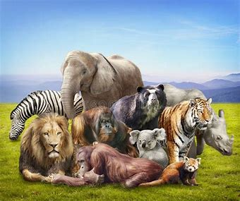
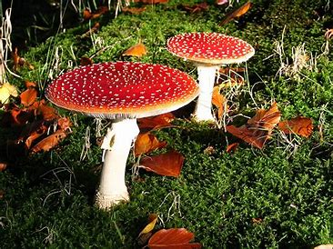

En nuestro planeta viven millones de seres vivos pero, ¿sabías que se dividen en cinco reinos diferentes? Algunos, como los animales y las plantas, se encuentran a simple vista; otros, como las bacterias, solo son visibles a través del microscopio. A continuación, nos adentramos en los cinco reinos de la naturaleza para conocerlos un poco mejor.
Nadie sabe con certeza cuándo, cómo ni por qué surgió la vida en la Tierra, pero Aristóteles reparó hace 2.400 años en que toda la biodiversidad del planeta era de origen animal o vegetal. Esta observación inicial del filósofo griego se completó en los siglos XIX y XX con el descubrimiento de nuevos reinos, hasta llegar a los cinco más reconocidos en la actualidad —agrupan a las 8,7 millones de especies que habitan la Tierra, según estima el Programa de las Naciones Unidas para el Medio Ambiente (PNUMA)—.
El sistema de los reinos biológicos es la forma que tiene la ciencia de clasificar a los seres vivos por su relación de parentesco en la historia de la evolución. Esto significa que todas las especies que integran estos cinco grandes grupos —algunas teorías recientes los elevan a seis e incluso siete— tienen antepasados comunes, por lo que comparten parte de su genética y pertenecen al mismo árbol genealógico.
Además de los reinos de los seres vivos, existen otras categorías taxonómicas dentro del mismo sistema de clasificación como, por ejemplo, el dominio, el filo, la clase, el orden, la familia, el género y la especie. Todas ellas siguen un orden jerárquico y están subordinadas entre sí, de forma que unas divisiones engloban a otras. De este modo, el dominio incluye al reino, el reino al filo, el filo a la clase, y así sucesivamente.
El reino Animalia es el más evolucionado y se divide en dos grandes grupos: vertebrados e invertebrados. Los animales son seres pluricelulares y eucariotas de alimentación heterótrofa, respiración aeróbica, reproducción sexual y capacidad de desplazamiento. Este reino es uno de los más biodiversos y está compuesto por mamíferos, peces, aves, reptiles, anfibios, insectos, moluscos y anélidos, entre otros.
Los árboles, las plantas y demás especies vegetales forman parte del reino Plantae, uno de los más antiguos y que se caracteriza por su naturaleza inmóvil, pluricelular y eucariota. Estos seres autótrofos, que contienen celulosa y clorofila en sus células, son imprescindibles para la vida en la Tierra al liberar oxígeno a través de la fotosíntesis. En cuanto a la forma de reproducirse, esta puede ser de tipo sexual o asexual.
Este nombre se utiliza para designar al reino de los hongos, que contempla a las levaduras, los mohos y todas las especies de setas. Estos organismos pluricelulares, aerobios, eucariotas y heterótrofos contienen quitina en sus paredes celulares, parasitan a otros seres vivos para alimentarse y se reproducen mediante esporas.
Este grupo es el más primitivo de los eucariontes y de él provendrían todos los demás. El reino Protista es parafilético —contiene al ancestro común pero no a todos sus descendientes— y engloba a aquellos organismos eucariotas que no se consideran ni animales, ni plantas ni hongos, como los protozoos. Al ser tan heterogéneo resulta difícil caracterizarlo, ya que sus integrantes tienen muy pocas cosas en común.
Es el reino de los seres vivos microscópicos y aglutina a los organismos procariotas (arqueas y bacterias). Este grupo está presente en todos los hábitats y lo forman seres unicelulares sin núcleo definido. La mayoría de las bacterias son aerobias y heterótrofas, mientras las arqueas suelen ser anaerobias y de metabolismo quimiosintético.